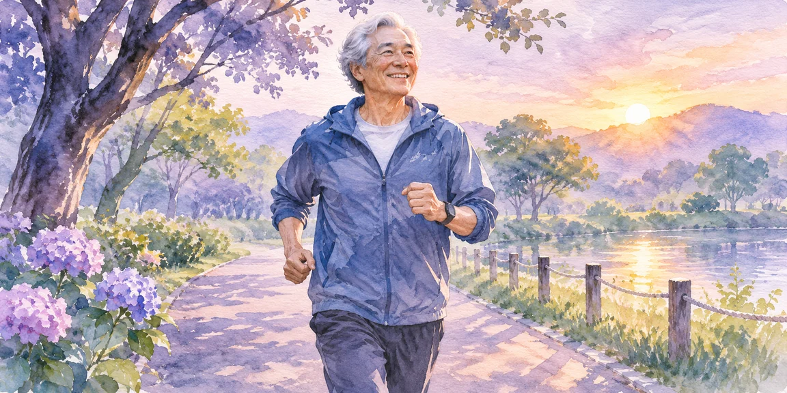

Destiny and Exercise
읽고 · 말하고 · 생각하는 영어

학습 안내
Destiny and Exercise
운명과 운동
핵심 단어 · Key Vocabulary
concept - 개념
length - 길이
Chinese character - 한자
in contrast - 반면에
character - 글자, 문자
extend - 연장하다
destiny - 운명
lifespan - 수명
represent - 나타내다, 상징하다
thus - 따라서
force - 힘
involve - 포함하다, 수반하다
influence - 영향을 미치다
reflect on - 되돌아보다, 깊이 생각하다
alter - 바꾸다, 변화시키다
chance event - 우연한 사건
회화 패턴 · Speaking Patterns
1. have an influence on ~
~에 영향을 미치다
Example Regular exercise has a positive influence on our health.
규칙적인 운동은 우리의 건강에 긍정적인 영향을 미칩니다.
2. The more ~, the more ...
~하면 할수록, 더 ...하다
Example The more you exercise, the stronger you become.
운동을 하면 할수록 더 강해집니다.
본문 읽기 · Reading
The Chinese characters for destiny and exercise share an interesting connection. The character 運 can mean movement, carrying, or the course of things. It appears in both 運命 (destiny) and 運動 (exercise or movement).
This gives us an interesting way to think about life. We cannot choose everything that happens to us, but we can choose how we move, act, and live each day.
Regular exercise changes the body little by little. It can improve our strength, energy, and health. More importantly, the habit of moving can change the way we live.
Our destiny may not be completely under our control. Still, what we do today can influence tomorrow. When we move our body and take action, we may also begin to change the direction of our life.
한국어 해석 · Translation
‘운명(運命)’과 ‘운동(運動)’이라는 한자에는 흥미로운 공통점이 있습니다. 두 단어에는 모두 ‘운(運)’이라는 글자가 들어갑니다. 이 글자에는 움직이다, 옮기다, 또는 어떤 것이 흘러가는 과정이라는 뜻이 담겨 있습니다.
이것은 우리에게 삶을 바라보는 흥미로운 관점을 줍니다. 우리에게 일어나는 모든 일을 선택할 수는 없지만, 매일 어떻게 움직이고 행동하며 살아갈지는 선택할 수 있습니다.
규칙적인 운동은 우리의 몸을 조금씩 변화시킵니다. 체력과 에너지, 건강을 향상시킬 수 있습니다. 더 중요한 것은 몸을 움직이는 습관이 우리의 생활 방식까지 변화시킬 수 있다는 점입니다.
우리의 운명이 완전히 우리의 통제 아래 있는 것은 아닐지도 모릅니다. 하지만 오늘 우리가 하는 행동은 내일에 영향을 줄 수 있습니다. 몸을 움직이고 행동하기 시작할 때, 우리 삶의 방향도 바뀌기 시작할 수 있습니다.
토론 질문 · Discussion Questions
Do you think exercise can change a person's life? Why or why not?
운동이 사람의 삶을 바꿀 수 있다고 생각하나요? 왜 그렇게 생각하나요, 또는 왜 그렇지 않다고 생각하나요?
What kind of exercise or physical activity do you enjoy most?
어떤 운동이나 신체 활동을 가장 좋아하나요?
What changes have you noticed when you exercise regularly?
규칙적으로 운동할 때 어떤 변화를 느꼈나요?
Do you believe our daily habits can influence our destiny? Why?
우리의 일상적인 습관이 운명에 영향을 미칠 수 있다고 믿나요? 그 이유는 무엇인가요?
예시 답변 · Sample Answers
Yes. I think exercise can change our energy, confidence, and daily habits. Small physical changes can lead to bigger changes in life.
네. 운동은 우리의 에너지와 자신감, 일상의 습관을 변화시킬 수 있다고 생각합니다. 작은 신체적 변화가 삶의 더 큰 변화로 이어질 수 있습니다.
I enjoy walking because it is simple and easy to do anywhere. It also helps me clear my mind.
저는 걷기를 좋아합니다. 간단하고 어디서나 쉽게 할 수 있기 때문입니다. 또한 머리를 맑게 하는 데 도움이 됩니다.
When I exercise regularly, I feel more energetic and sleep better. I also feel more positive about myself.
규칙적으로 운동하면 에너지가 더 생기고 잠도 더 잘 잡니다. 또한 제 자신에 대해 더 긍정적으로 느끼게 됩니다.
Yes. Our destiny is not decided only by luck. The choices and habits we repeat every day can shape our future.
네. 우리의 운명은 단지 운에 의해서만 결정되는 것은 아닙니다. 매일 반복하는 선택과 습관이 우리의 미래를 만들어 갈 수 있습니다.
오늘의 메시지 · Today’s Message
"Move your body, and you may change your destiny."
몸을 움직이면, 당신의 운명도 바뀔 수 있다.
영작 연습 · Write It Yourself
1. 규칙적인 운동은 우리의 미래에 영향을 미칠 수 있습니다.
→ ____________________________________________________________
2. 더 많이 움직일수록 더 건강해집니다.
→ ____________________________________________________________